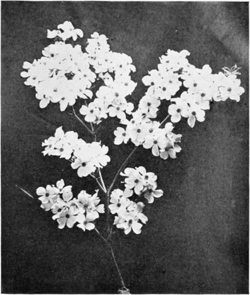

Chapter XIX. The Neglected American Plants
Description
This section is from the book "Landscape Gardening", by Andrew Jackson Downing. Also available from Amazon: Landscape Gardening.
Chapter XIX. The Neglected American Plants
IT is an old and familiar saying that a prophet is not without honor except in his own country, and as we were making our way this spring through a dense forest in the State of New Jersey, we were tempted to apply this saying to things as well as people. How many grand and stately trees there are in our woodlands that are never heeded by the arboriculturist in planting his lawns and pleasure grounds; how many rich and beautiful shrubs that might embellish our walks and add variety to our shrubberies that are left to wave on the mountain crag or overhang the steep side of some forest valley; how many rare and curious flowers that bloom unseen amid the depths of silent woods or along the margin of wild water-courses! Yes, our hothouses are full of the heaths of New Holland and the Cape, our parterres are gay with the verbenas and fuchsias of South America, our pleasure grounds are studded with the trees of Europe and Northern Asia, while the rarest spectacle in an American country place is to see above three or four native trees, rarer still to find any but foreign shrubs, and rarest of all to find any of our native wild flowers.
Nothing strikes foreign horticulturists and amateurs so much, as this apathy and indifference of Americans to the beautiful sylvan and floral products of their own country. An enthusiastic collector in Belgium first made us keenly sensible of this condition of our countrymen, last summer, in describing the difficulty he had in procuring from any of his correspondents here American seeds or plants, even of well known and tolerably abundant species, by telling us that amateurs and nurserymen who annually import from him every new and rare exotic that the richest collections of Europe possessed, could scarcely be prevailed upon to make a search for native American plants, far more beautiful, which grow in the woods not ten miles from their own doors. Some of them were wholly ignorant of such plants except so far as a familiarity with their names in the books may be called an acquaintance. Others knew them but considered them "wild plants," and therefore too little deserving" of attention to be worth the trouble of collecting even for curious foreigners. "And so," he continued, "in a country of azaleas, kalmias, rhododendrons, cypripediums, magnolias and nyssas, — the loveliest flowers, shrubs, and trees of temperate climates, — you never put them in your gardens, but send over the water every year for thousands of dollars worth of English larches and Dutch hyacinths. Voila le gout Republicain!"
* Original date of May, 1851.
Fig. 36. Native Flowering Dogwood.
In truth, we felt that we quite deserved the sweeping sarcasm of our Belgian friend. We had always, indeed, excused ourselves for the well known neglect of the riches of our native flora by saying that what we can see any day in the woods is not the thing by which to make a garden distinguished, and that since all mankind have a passion for novelty, where, as in a fine foreign tree or shrub, both beauty and novelty are combined, so much the greater is the pleasure experienced. But, indeed, one has only to go to England, where "American plants" are the fashion (not undeservedly, too), to learn that he knows very little about the beauty of American plants. The difference between a grand oak or magnolia, or tulip-tree, grown with all its graceful and majestic development of head, in a park where it has nothing to interfere with its expansion but sky and air, and the same tree shut up in a forest, a quarter of a mile high, with only a tall gigantic mast of a stem, and a tuft of foliage at the top, is the difference between the best bred and highly cultivated man of the day, and the best buffalo hunter of the Rocky Mountains, with his sinewy body tattooed and tanned till you scarcely know what is the natural color of the skin. A person accustomed to the wild Indian only, might think he knew perfectly well what a man is, and so indeed he does, if you mean a red man. But the "civilizee" is not more different from the aboriginal man of the forest than the cultivated and perfect garden tree or shrub (granting always that it takes to civilization, which some trees, like Indians, do not), than a tree of the pleasure grounds differs from a tree of the woods.
Perhaps the finest revelation of this sort in England is the clumps and masses of our mountain laurel and our azaleas and rhododendrons, which embellish the English pleasure grounds. In some of the great country seats, whole acres of lawn, kept like velvet, are made the groundwork upon which these masses of the richest foliaged and the gayest flowering shrubs are embroidered. Each mass is planted in a round or oval bed of deep, rich sandy mould, in which it attains a luxuriance and perfection of form and foliage almost as new to an American as to a Sandwich Islander. The Germans make avenues of our tulip-trees, and in the South of France, one finds more planted magnolias in the gardens than there are, out of the woods, in all the United States. It is thus, by seeing them away from home where their merits are better appreciated and more highly developed, that one learns for the first time what our gardens have lost, by our having none of these "American plants" in them.
The subject is one which should be pursued to much greater length than we are able to follow it in the present article. Our woods and swamps are full of the most exquisite plants, some of which would greatly embellish even the smallest garden. But it is rather to one single feature in the pleasure grounds that we would at this moment direct the attention, and that is the introduction of two broad-leaved evergreen shrubs that are abundant in every part of the middle states, and that are, nevertheless, seldom to be seen in any of our gardens or nurseries from one end of the country to the other. The defect is the more to be deplored, because our ornamental plantations, so far as they are evergreen, consist almost entirely of pines and firs — all narrow-leaved evergreens — far inferior in richness of foliage to those we have mentioned.
The native holly grows from Long Island to Florida, and is quite abundant in the woods of New Jersey, Maryland, and Virginia. It forms a shrub or small tree, varying from four to forty feet in height, clothed with foliage and berries of the same ornamental character as the European holly, except that the leaf is a shade lighter in its green. The plant, too, is perfectly hardy, even in the climate of Boston, while the European holly is quite too tender for open air culture in the middle states, notwithstanding that peaches ripen here in orchards, and in England only on walls.
The American laurel, or Kalmia, is too well known in all parts of the country to need any description. And what new shrub, we would ask, is there, whether from the Himalayas or the Andes, whether hardy or tender, which surpasses the American laurel when in perfection as to the richness of its dark green foliage or the exquisite delicacy and beauty of its gay masses of flowers? If it came from the highlands of Chili and were recently introduced it would bring a guinea a plant, and no grumbling!
Granting all this, let our readers who wish to decorate their grounds with something new and beautiful undertake now, in this month of May (for these plants are best transplanted after they have commenced a new growth), to plant some laurels and hollies. If they would do this quite successfully they must not stick them here and there among other shrubs in the common border, but prepare a bed or clump in some cool, rather shaded aspect — a north slope is better than a southern one — where the subsoil is rather damp than dry. The soil should be sandy or gravelly, with a mixture of black earth well decomposed, or a cartload or two of rotten leaves from an old wood, and it should be at least eighteen or twenty inches deep to retain the moisture in a long drought. A bed of these fine evergreens made in this way will be a feature in the grounds, which after it has been well established for a few years will convince you far better than any words of ours of the neglected beauty of our American plants.*
* It is interesting to recall that, subsequent to the time of Mr. Down-ing's writing, there developed in this country a much better appreciation of our native plants. Doubtless Mr. Downing's advocacy had much to do with bringing them into better favor. At the present time native species are widely used by the best gardeners and landscape architects. — F. A. W.
Continue to:
- prev: Chapter XVIII. Country Places In Autumn
- Table of Contents
- next: Chapter XX. A Word In Favor Of Evergreens